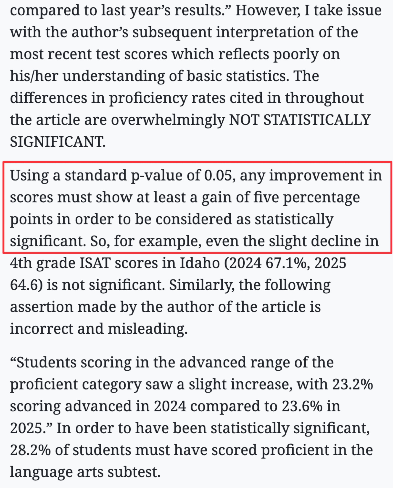
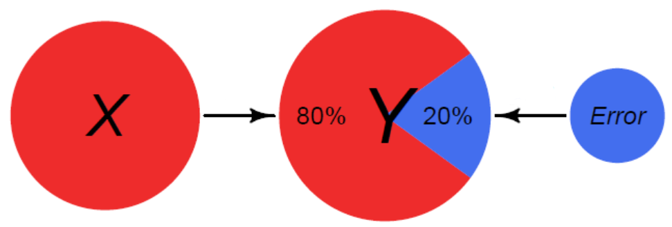
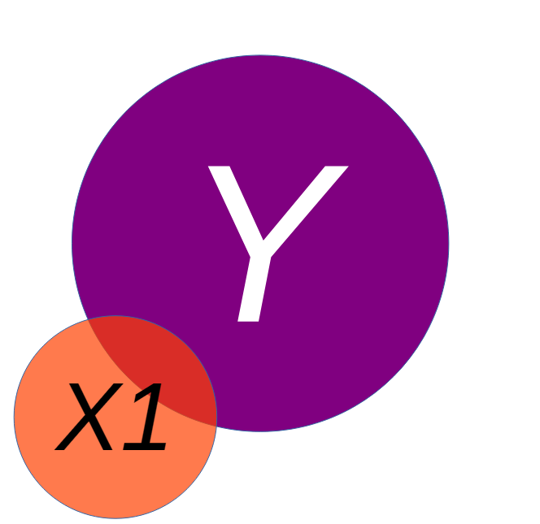
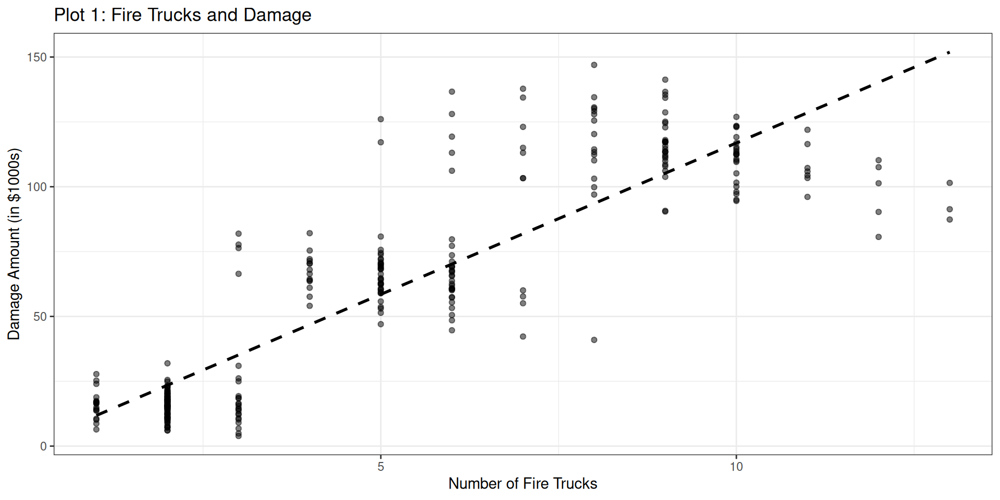
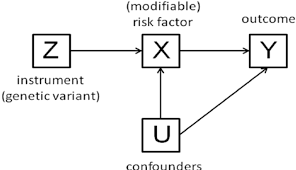
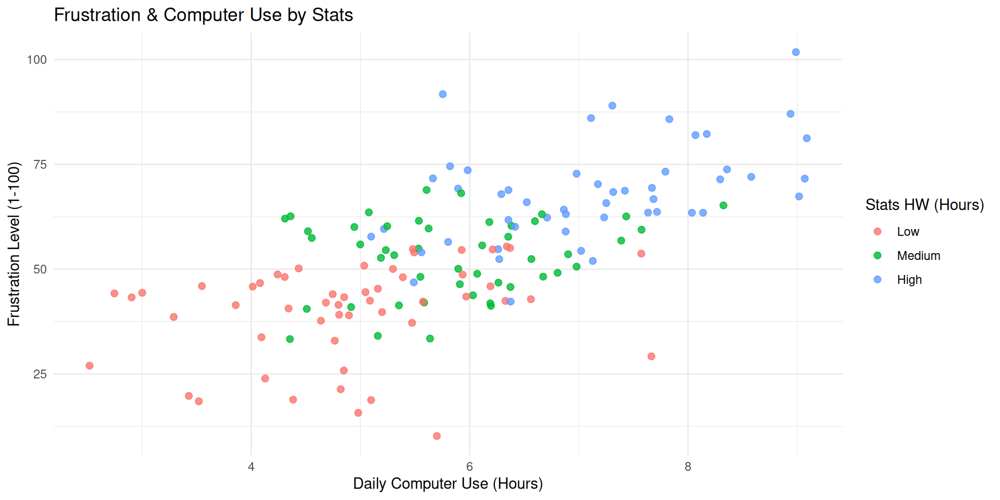
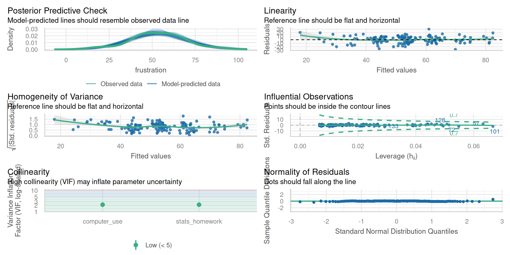

Week 10: Multiple Regression
Date: October 27, 2025
Today…
https://bsky.app/profile/andrew.heiss.phd/post/3ly6hqr3mtk2z
Regression
3 main reasons for using regression:
- As a description (what is the average salary for men and women?)
- As part of causal inference (Does being a woman result in a lower salary?)
- For prediction (“What happens if…” questions)
Regression
Overall, we are providing a model to give us a “best guess” on predicting our outcome
\[ Y_i = b_0 + b_1X_i + e_i \]
Explaining Variance
Explaining Variance
Explaining Variance
Model Interpretation
Once we have a model, we will be able to interpret the coefficients. For a bivariate regression, this was fairly straightforward
We would look to the beta (effect size) and interpret it as: for every 1 unit increase in our X variable, there will be beta units increase in our Y variable.
Regressions
We may want to include additional predictors into our model to best explain the variance in an outcome:
\[ Y_i = b_0 + b_1X_{1i} + b_2X_{2i} + ... + b_nX_{ni}+ e_i \]
Explaining Variance

Fire Data Example
We have been contracted by the county to examine their Fire Department. We have been provided with the data below, and asked to examine what may be related to how expensive a fire costs.
Code
# --- Step 1: Simulate the Data ---
set.seed(123) # for reproducibility
n <- 300 # number of fires
# Create three distinct groups for fire size
fire_sizes <- sample(c("Small", "Medium", "Large"), n, replace = TRUE, prob = c(0.4, 0.3, 0.3))
# Simulate our variables based on fire size
fire_data <- tibble(size = factor(fire_sizes, levels = c("Small", "Medium", "Large"))) %>%
mutate(
# The bigger the fire, the more trucks are sent.
num_trucks = case_when(
size == "Small" ~ round(rnorm(n(), 2, 0.5)),
size == "Medium" ~ round(rnorm(n(), 5, 1)),
size == "Large" ~ round(rnorm(n(), 9, 1.5))
),
# For a given size, more trucks -> less damage (the true effect)
# But bigger size -> more damage (the confounding effect)
damage_amount = case_when(
size == "Small" ~ 20 - 2 * num_trucks + rnorm(n(), 0, 5),
size == "Medium" ~ 80 - 3 * num_trucks + rnorm(n(), 0, 8),
size == "Large" ~ 150 - 4 * num_trucks + rnorm(n(), 0, 12)
)
) %>%
# ensure no negative values
filter(num_trucks > 0, damage_amount > 0)Fire Data: Relationship
Let’s start by examining the relationship between # of firetrucks and the damage of the fire
Bivariate relationship
This relationship can also be represented by a correlation, or a regression
Pearson's product-moment correlation
data: fire_data$num_trucks and fire_data$damage_amount
t = 32.093, df = 298, p-value < 0.00000000000000022
alternative hypothesis: true correlation is not equal to 0
95 percent confidence interval:
0.8524507 0.9037853
sample estimates:
cor
0.8806778
Call:
lm(formula = damage_amount ~ num_trucks, data = fire_data)
Residuals:
Min 1Q Median 3Q Max
-64.534 -10.946 -3.153 9.694 67.540
Coefficients:
Estimate Std. Error t value Pr(>|t|)
(Intercept) 0.1458 2.2072 0.066 0.947
num_trucks 11.6731 0.3637 32.093 <0.0000000000000002 ***
---
Signif. codes: 0 '***' 0.001 '**' 0.01 '*' 0.05 '.' 0.1 ' ' 1
Residual standard error: 20.15 on 298 degrees of freedom
Multiple R-squared: 0.7756, Adjusted R-squared: 0.7748
F-statistic: 1030 on 1 and 298 DF, p-value: < 0.00000000000000022Bivariate relationship
Based on the visualization, the correlation and the regression, what would we conclude from this analysis?
Bivariate relationship
Based on the visualization, the correlation and the regression, what would we conclude from this analysis?
A linear regression was used to examine the impact of number of trucks on the scene and the amount of damage that was done by a fire. The number of trucks positively impacted the damage done by the fire (b = 11.67, p < .001), suggesting that as more trucks are present, the fire does more damage.
Would we be able to say that # trucks causes the damage? Therefore, our suggestion to the county would be to send less trucks to each of the fires. Case closed
Another Side Quest: Directed Acyclic Graphs (DAGs)
Drawing your statistical models and theory can always be beneficial. Dr Haraden should be drawing things on the board
Fire Data: Multivariate Relationship
There is a third variable that we haven’t incorporated. Let’s take that information into account when we are looking at the visualization:
Code
# Plot 2
fire_data %>%
ggplot(aes(x = num_trucks, y = damage_amount, color = size)) +
geom_point(alpha = 0.7) +
scale_color_manual(values = c("Small" = "green",
"Medium" = "orange",
"Large" = "red")) +
labs(
title = "Plot 2: Firetrucks & Damage by Size",
x = "Number of Fire Trucks",
y = "Damage Amount (in $1000s)",
color = "Fire Size"
) +
theme_bw()Fire Data: Multivariate Relationship
That seems to make more sense. Let’s add in the lines of best fit too
Code
# Plot 3: The "Controlled" Relationship (Simpson's Paradox)
fire_data %>%
ggplot(aes(x = num_trucks, y = damage_amount, color = size)) +
geom_point(alpha = 0.5) +
# Fit a line FOR EACH GROUP to show the true relationship
geom_smooth(method = "lm", se = FALSE) +
labs(
title = "Plot 3: The Controlled Relationship",
x = "Number of Fire Trucks",
y = "Damage Amount (in $1000s)",
color = "Fire Size"
) +
theme_bw()Fire Data: Multivariate Relationship
Let’s see what the multiple regression brings us
Call:
lm(formula = damage_amount ~ num_trucks + size, data = fire_data)
Residuals:
Min 1Q Median 3Q Max
-23.7451 -4.6995 -0.2433 4.4801 29.3847
Coefficients:
Estimate Std. Error t value Pr(>|t|)
(Intercept) 22.5340 1.1616 19.399 < 0.0000000000000002 ***
num_trucks -3.4136 0.4328 -7.886 0.0000000000000604 ***
sizeMedium 59.5122 1.8224 32.656 < 0.0000000000000002 ***
sizeLarge 122.3535 3.2873 37.220 < 0.0000000000000002 ***
---
Signif. codes: 0 '***' 0.001 '**' 0.01 '*' 0.05 '.' 0.1 ' ' 1
Residual standard error: 8.431 on 296 degrees of freedom
Multiple R-squared: 0.961, Adjusted R-squared: 0.9606
F-statistic: 2430 on 3 and 296 DF, p-value: < 0.00000000000000022Now we can write it up
Fire Data: Formal Writeup
“The current set of analyses sought to examine the influence of the number of firetrucks on the scene and the amount of damage that a fire caused, controlling for the size of the fire. The number of firetrucks present were regressed on the damage amount (in \$1,000s) and the size of the fire. The overall multiple regression was statistically significant ( \(R^2\) = .96, p < .001), and the two variables (Number of Trucks and Size of the Fire) accounted for 96% of the variance in damage done. Each of the two independent variables also had a statistically significant effect on damage (p’s < .001). The number of trucks was negatively related to the amount of damage done (b = -3.41), meaning that for each additional truck that was on the scene, there was a $3,410 reduction in damage, controlling for the size of the fire. Additionally, the size of the fire increased the amount of damage at Medium (b = 59.51) and Large (b =122.35).”
Reporting Standardized or Unstandardized?
INTERPRET b:
When the variables are measured in a meaningful metric
To compare the relative effects of different predictors in the same sample
INTERPRET β:
When the variables are not measured in a meaningful metric
To compare effects across samples or studies
Goldilocks Problem
Models that are underfit, overfit or just-right

Another Example: Computer time & Frustration
Code
# Step 1: Simulate the Data
n <- 150 # Number of students
# Simulate total daily computer use in hours
computer_use <- rnorm(n, mean = 6, sd = 1.5)
# Simulate hours spent on stats homework, now as a whole number
stats_homework <- round(0.7 * computer_use + rnorm(n, 0, 1))
# Ensure no negative values after rounding
stats_homework[stats_homework < 0] <- 0
stats_homework[stats_homework > computer_use] <- 1
# Simulate frustration level (driven mostly by stats homework)
# Scale of 1-100
frustration <- 10 + (2 * computer_use) + (8 * stats_homework) + rnorm(n, 0, 10)
# Create a dataframe and clean up any impossible values
student_data <- tibble(
frustration = frustration,
computer_use = computer_use,
stats_homework = stats_homework
) %>%
filter(frustration > 0, computer_use > 0)
# Bin the 'stats_homework' variable
student_data <- student_data %>%
mutate(
stats_homework_bin = cut(stats_homework,
breaks = quantile(stats_homework, probs = seq(0, 1, by = 1/3)),
include.lowest = TRUE,
labels = c("Low", "Medium", "High"))
)We have collected data on graduate students and their weekly frustration levels. Data that were also collected included the amount of time they were spending on their computer as well as the amount of statistics homework that they had.
Frustration Model
Taking a bivariate look at things, we might have an initial model like this:
\[ Frustration=b_0 + b_1Comp.Hours + e_i \]
Frustration Model
Code
p1 <- student_data %>%
ggplot(aes(x = computer_use, y = frustration)) +
geom_point(alpha = 0.5) +
geom_smooth(method = "lm",
se = FALSE,
color = "darkorange") +
labs(
title = "Frustration & Computer Use",
subtitle = "Linear Fit",
x = "Daily Computer Use (Hours)",
y = "Frustration Level (1-100)"
) +
theme_minimal()
p2 <- student_data %>%
ggplot(aes(x = computer_use, y = frustration)) +
geom_point(alpha = 0.5) +
geom_smooth(method = "loess",
se = FALSE,
color = "darkorange") +
labs(
title = "Frustration & Computer Use",
subtitle = "Loess Fit",
x = "Daily Computer Use (Hours)",
y = "Frustration Level (1-100)"
) +
theme_minimal()
p1 + p2Side Quest: Model Assumptions
- Linearity - A linear relationship exists between predictors and outcome
- Multicollinearity - The variables are minimally related to one another (VIF)
- Independence of Observations - Each observation in the model is independent of one another
- Homoscedasticity of Residuals - Residuals have constant variance across all points of the model
- Multivariate Normality - Residuals of the model are normally distributed (QQ Plots)
All of these are checked when using check_model() within the easystats library
Frustration Model: lm()
Call:
lm(formula = frustration ~ computer_use, data = student_data)
Residuals:
Min 1Q Median 3Q Max
-41.546 -7.090 -0.833 6.922 39.571
Coefficients:
Estimate Std. Error t value Pr(>|t|)
(Intercept) 9.3538 4.3697 2.141 0.0339 *
computer_use 7.4389 0.7171 10.373 <0.0000000000000002 ***
---
Signif. codes: 0 '***' 0.001 '**' 0.01 '*' 0.05 '.' 0.1 ' ' 1
Residual standard error: 12.16 on 148 degrees of freedom
Multiple R-squared: 0.421, Adjusted R-squared: 0.4171
F-statistic: 107.6 on 1 and 148 DF, p-value: < 0.00000000000000022Frustration Model: Multivariate
Frustration Model: Multivariate
Code
student_data %>%
ggplot(aes(x = computer_use, y = frustration,
color = stats_homework_bin)) +
geom_point(alpha = 0.5) +
# Fit a line FOR EACH GROUP to show the true relationship
geom_smooth(method = "lm", se = FALSE) +
labs(
title = "Frustration & Computer Use by Stats",
x = "Daily Computer Use (Hours)",
y = "Frustration Level (1-100)",
color = "Stats HW (Hours)"
) +
theme_bw()Frustration Model
Call:
lm(formula = frustration ~ computer_use + stats_homework, data = student_data)
Residuals:
Min 1Q Median 3Q Max
-27.6099 -6.5164 0.1487 6.5067 30.7120
Coefficients:
Estimate Std. Error t value Pr(>|t|)
(Intercept) 11.800 3.524 3.349 0.00103 **
computer_use 1.861 0.844 2.205 0.02900 *
stats_homework 7.702 0.851 9.050 0.000000000000000792 ***
---
Signif. codes: 0 '***' 0.001 '**' 0.01 '*' 0.05 '.' 0.1 ' ' 1
Residual standard error: 9.779 on 147 degrees of freedom
Multiple R-squared: 0.6282, Adjusted R-squared: 0.6231
F-statistic: 124.2 on 2 and 147 DF, p-value: < 0.00000000000000022Comparing Models
Maybe we would like to test to see if including the Stats Homework variable improved the model
Since the first regression is nested within the second, we can run an ANOVA
Analysis of Variance Table
Model 1: frustration ~ computer_use
Model 2: frustration ~ computer_use + stats_homework
Res.Df RSS Df Sum of Sq F Pr(>F)
1 148 21892
2 147 14059 1 7833.5 81.907 0.0000000000000007916 ***
---
Signif. codes: 0 '***' 0.001 '**' 0.01 '*' 0.05 '.' 0.1 ' ' 1| Statistic | Meaning | Interpretation |
|---|---|---|
Res.Df (Residual Degrees of Freedom) |
Remaining degrees of freedom after estimating parameters | 148 for Model 1, 147 for Model 2 (one more parameter estimated) |
RSS (Residual Sum of Squares) |
Total unexplained variance by the model | Decreases substantially from 24,468 → 13,620 with the new predictor, showing improved fit |
Df (Difference in df) |
Number of parameters added | 1 (adding stats_homework) |
Sum of Sq (Difference in RSS) |
Variance explained by the added predictor | 10,848 units of variance explained by stats_homework |
F |
F-statistic testing whether this variance reduction is significant | 117.07 — very large, meaning substantial improvement |
Pr(>F) |
p-value associated with F |
Model Assumptions: Frustration
Model Assumptions
- Linearity - A linear relationship exists between predictors and outcome
- Apply Transformation (square root or log); Drop the variable
- Multicollinearity - The variables are minimally related to one another (VIF)
- Remove variable; different type of regression (lasso, partial least squares)
- Independence of Observations - Each observation in the model is independent of one another
- Dummy coding, lags; Use MLM
- Homoscedasticity of Residuals - Residuals have constant variance across all points of the model
- Apply Transformation (square root or log);
- Multivariate Normality - Residuals of the model are normally distributed (QQ Plots)
- Check for outliers; Apply Transformation (square root or log)
Model Selection - Stepwise
Backward elimination
Start with the full model (all potential predictors)
Predictors eliminated one-at-a-time from the model until we cannot improve the model any further
Forward selection
Start with nothing in the model
Continue to add predictors one-at-a-time until we cannot find any predictors that improve the model any further
Model Selection
ALWAYS start with theory and previous work
You should NEVER just go into data with just a lot of predictors and backward selection in mind. 🧨